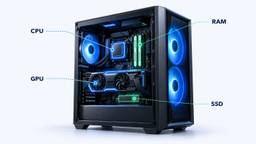

GIGAZINE
https://gigazine.net/
日々のあらゆるシーンで役立つ情報を提供するIT系ニュースサイト。毎日更新中。
フィード
正しい情報ほど煽りタイトルは逆効果で信頼性を失ってしまうという研究結果 2
2
GIGAZINE
動画のサムネイルや記事の見出しに誇張した表現や誤解を招くようなフレーズを入れる「クリックベイト」は、再生数やアクセス数を増やすためにしばしば用いられます。しかし、若いSNSユーザーはクリックベイトに引きつけられなくなっており、正しい情報を発信していたとしてもクリックベイトが原因で敬遠される可能性があるという研究結果が示されました。続きを読む...
6時間前

『機動戦士ガンダムSEED FREEDOM ZERO』本予告映像公開、主題歌は西川貴教 with t.komuro＆EDはSee-Saw 1
GIGAZINE
2027年1月15日(金)から劇場公開となる『機動戦士ガンダムSEED FREEDOM ZERO』の本予告映像がYouTubeで公開されました。2024年に公開された映画『機動戦士ガンダムSEED FREEDOM』につながる前日譚で、主題歌とエンディングテーマはそれぞれ前作に引き続き西川貴教 with t.komuroとSee-Sawが担当します。続きを読む...
6時間前

組み立て済みPCをパーツごとに価格表示しおトクかどうか自動判定してくれるサイト「PC Deal Check」 2
GIGAZINE
組み立て済みPCの購入を検討する際、購入の決め手となる指標の一つに「パーツの合計価格から見てお買い得かどうか」があります。「PC Deal Check」は購入予定のPCが適正価格で提示されているかを、専門知識がなくても手軽に判断できるサイトです。続きを読む...
8時間前

1週間以上バッテリーが持続するスマートウォッチ「Google Fitbit Edge」を1カ月以上使ってみたよレビュー 2
GIGAZINE
「Google Fitbit Edge」は多機能スマートウォッチ「Google Pixel Watch」と画面なしスマートトラッカー「Google Fitbit Air」の中間的な立ち位置の製品として開発されたスマートウォッチです。そんなGoogle Fitbit Edgeを1カ月以上にわたって着用し続けたので、使用感をまとめました。続きを読む...
9時間前

無料で使えるブラウザベースのファイルマネージャー「FileBrowser Quantum」、超高速検索・複数ユーザー管理・アクセス制御・期限やパスワード付き共有・ファイルプレビュー・編集などができてローカルでセルフホスト可能 3
GIGAZINE
保存したファイルが増えていくと目的のファイルを探し出すだけでなく、内容を確認して別のユーザーに共有する作業にも手間がかかります。そこで、インデックスを使った高速検索や画像・動画・文書のプレビュー、パスワードや有効期限付きのファイル共有などに対応した無料のファイルマネージャーが「FileBrowser Quantum」です。ブラウザからどのような操作ができるのか確かめるため、ローカル環境に構築して実際に使ってみました。続きを読む...
9時間前

リモートワークをすると1日あたり「21分」の運動時間を失うという研究結果 3
GIGAZINE
リモートワークをすると朝晩の通勤やオフィスビル内の移動がなくなるため、オフィスに出勤する時より仕事がはかどるという人もいるはず。その一方で、リモートワークによって日々の運動時間が大きく減ってしまう可能性があるとの研究結果が発表されました。続きを読む...
15時間前
AppleのiPhoneは中国最大のネット通販セールイベントで最も売れたスマホ10機種のうち6機種を占める 2
GIGAZINE
11月11日は中国では独身の日として知られており、現在は世界最大級のネット通販セールイベントとして広まっています。そんな独身の日に、中国ではAppleのiPhoneがよく売れたことが調査企業Counterpoint Researchの調査で明らかになりました。続きを読む...
17時間前
人類は350年前にどうやって「光にも速さがある」と気づいたのか？ 26
GIGAZINE
光の速さは真空中で秒速約30万kmであることが知られていますが、光が移動するのに時間がかかることが観測によって初めて実証されたのは1676年のことです。現代のような精密な測定機器が存在しなかった350年前に、デンマークの天文学者であるオーレ・レーマーがどのようにして光の速さが有限であることを突き止めたのかについて、科学メディアのScience Norwayが解説しています。続きを読む...
17時間前
AI音声による虚偽通報が深刻化 14
GIGAZINE
人間の声色と変わらないAI音声が登場したことで、警察への虚偽通報が相次いでいることがアメリカで問題視されていると、海外メディアのNPRが報じています。続きを読む...
19時間前

シンプルな構文で美しい図を自動生成する「D2」が進化、非営利化で独自レイアウトエンジンもオープンソース化 99
GIGAZINE
テキストで図形や矢印の関係を記述するだけで図を自動生成できる「D2」は、2022年に基本的な使い方をレビューしました。その後は手描き風のデザインやアニメーション、ターミナルでも表示できるASCII出力などに対応し、図の表現方法が広がっています。2026年9月には運営体制が非営利に切り替わり、独自の自動配置エンジンもオープンソース化されたので、追加された機能を中心に改めて使ってみました。続きを読む...
1日前

ゴミ捨て場で大量のアポピスの儀式の痕跡が見つかり古代エジプトでは呪いの儀式が広く行われていたことが明らかに 2
GIGAZINE
エジプトの古代都市であるテーベの遺跡で、焼け焦げたパピルス(古代エジプトで利用された紙)の断片40点が見つかりました。ここから、古代エジプトで有名な呪いの儀式は、これまで考えられてきたよりも広く日常的に行われていた可能性が浮上しています。続きを読む...
1日前

GoogleがAIエージェントによるGmailなどへのAPI直接アクセスを制限へ、MCPサーバーかCLIの使用を要求 2
GIGAZINE
Googleは2027年2月1日から、AIエージェントがGmailやGoogleドライブなどのGoogle Workspaceのサービスにアクセスする際に公式のMCPサーバーやGoogle Workspace CLIを使用するよう求める方針を発表しました。GmailのMCPサーバーを巡ってはメールの送信などが一部の開発者に限定されていることが指摘されていましたが、記事作成時点で機能制限に関する記述がすでに変更されています。続きを読む...
1日前
YouTubeで広告が出たら自動的にページを再読み込みして広告を消すChrome拡張「YouTube Ad Punisher」 3
GIGAZINE
「YouTube Ad Punisher」は、YouTubeで広告が再生された瞬間にページを自動でリロードし、広告を回避するブラウザ拡張機能です。一般的な広告ブロッカーとは異なり、広告の通信自体を遮断するのではなく、ページの再読み込みによってYouTubeに広告配信の判定をやり直させる仕組みを採用しています。続きを読む...
1日前

有酸素運動と筋力トレーニングの順番が血糖値調節に影響するとの研究結果 3
GIGAZINE
運動が血糖値のコントロールに役立つことは広く知られており、ジョギングやサイクリングなどの有酸素運動と筋力トレーニングはそれぞれ異なる効果をもたらします。中国とスウェーデンの研究者らは、これらの運動をどのような順番で行うことでより高い効果を得られるかについて研究しました。続きを読む...
1日前

2026年11月27日のヘッドラインニュース 1
GIGAZINE
ボリューム満点の弁当を展開する「爆盛」シリーズの第2弾として、5種類の揚げ物を盛り付けた「爆盛のり弁」と大人のお子様ランチをイメージした「爆盛ハンバーグコロッケ＆ナポリタン丼」をローソンストア100が2026年12月2日(水)に発売します。続きを読む...
1日前
ガーリックソースたっぷりなバーガーキングの小型にんにくバーガー「にんにく・ガーリックチーズバーガー」試食レビュー 1
GIGAZINE
ガーリックペースト・フライドガーリック・ガーリックパウダーの3タイプのにんにくを使った「にんにく・ガーリックチーズバーガー」が2026年11月27日にバーガーキングの期間限定メニューとして登場しました。チーズを4種類に増やした「にんにく・ガーリッククアトロチーズバーガー」と、スモーキーなベーコンを追加した「にんにく・ガーリックベーコンチーズバーガー」も同時に登場したので、全種類食べて味を確かめてみました。続きを読む...
1日前

「AIは信用できない」と考えている人でもAIのアドバイスに影響されてしまうという研究結果 6
GIGAZINE
AIが生成する回答には誤った情報が含まれることもあるため、「AIよりも人間のアドバイスを信用する」という人も多いはず。ところが、AIを信用していない人であっても実際に意思決定を行う際にはAIのアドバイスに影響されてしまうことがイギリスのロンドン大学シティ・セントジョージズの研究チームによって明らかになりました。続きを読む...
1日前

NVIDIAがシンガポールなど東南アジア4カ国へのサーバー出荷停止をDELLやSupermicroなどに指示 3
GIGAZINE
NVIDIAがDELLやSupermicroといったメーカーに対し、シンガポール、マレーシア、インドネシア、タイの東南アジア4カ国にNVIDIA製半導体を搭載したサーバーを出荷しないよう指示したことがわかりました。東南アジア諸国が、NVIDIA製半導体を何とかして入手したい中国にとっての中継地になっており、アメリカの商務省が対策に乗り出したためです。続きを読む...
1日前

カビの生えた食品はカビの部分だけ切り除けば食べられるのか？ 76
GIGAZINE
カビの生えた食品を誤って食べてしまったらどうなるのか、一部にカビが生えていた場合はそこを切り取れば問題なく食べられるのかといった疑問について、教育系YouTubeチャンネルのTED-Edが解説しています。続きを読む...
1日前

サンタクロースと無料で話せる公衆電話を南太平洋の小さな島に設置した通信技術者の記録 13
GIGAZINE
南太平洋に浮かぶオーストラリア領のノーフォーク島で携帯電話網を運営する通信技術者のニック氏らが、中古の公衆電話機をアメリカから調達し、島に設置しました。公衆電話の設置から既存の通信網への接続、AIを活用した独自のサービスの実装までの一連の経緯を、ニック氏が自身のブログで公開しています。続きを読む...
2日前

AIキャラと会話できるアプリ「Talkie」が性的コンテンツを理由にApp Storeから削除される、Google Playでは配信が続く 13
GIGAZINE
中国のAI企業であるMiniMaxが展開するAIアプリ「Talkie」がApp Storeから削除されました。Appleは削除の理由を「性的コンテンツが原因」と説明しています。続きを読む...
2日前
NVIDIAが海賊版書籍を配布しAdobeと共有したと著者らが主張 2
GIGAZINE
NVIDIAがAIモデルの学習に著作権で保護された書籍を無断で使用したとして、2024年に書籍著者らから提訴されました。裁判所は訴訟の一部却下申し立てを認めましたが、一部の主張は訴訟を継続できると判断しており、書籍著者らは2026年11月23日に「NVIDIAはダウンロードした海賊版書籍をAdobeなどの提携企業に拡散した」と訴状を修正しています。続きを読む...
2日前

人間の生きた細胞にビートルズの歌詞を保存＆細胞分裂後も正確に読み取ることに成功 84
GIGAZINE
アメリカのテキサス大学ダラス校の研究チームが人間の生きた細胞にデジタルデータを保存したうえで、第三者によるデータの読み取りを困難にする技術を開発したと発表しました。研究チームはビートルズの楽曲「レット・イット・ビー」の歌詞をDNAに記録し、細胞分裂を繰り返した後も正確に読み取れることを確認しています。続きを読む...
2日前

メモリ不足により2026年第3四半期のラテンアメリカにおけるスマートフォン出荷台数は前年同期比24％減を記録 2
GIGAZINE
グローバルなテクノロジー市場調査企業のCounterpoint Researchが、2026年第3四半期のスマートフォン出荷台数レポートを公開しました。レポートではラテンアメリカのスマートフォン出荷台数が前年同期比24％減となり、2015年以降で2番目に低い四半期出荷台数となったことが示されています。続きを読む...
2日前

生産終了がアナウンスされたテスラのCybertruck(サイバートラック)は中古車市場で最も売れやすいトラック 2
GIGAZINE
テスラが2027年中頃に生産を終了すると発表した「Cybertruck(サイバートラック)」は、中古車市場で最も売れているトラックであることが明らかになっています。続きを読む...
2日前
NVIDIAが画像生成AI「Nemotron-Labs-Image-30B-A3B」を公開、拡散モデルではなく自己回帰モデルを採用しハーネスと組み合わせてGPT-Image-2超えを達成 14
GIGAZINE
NVIDIAが画像生成AIモデル「Nemotron-Labs-Image-30B-A3B」をオープンウェイトモデルとして無償公開しました。続きを読む...
2日前

中国への過度なハイテク輸出規制は「国内開発体制の加速につながる」と半導体露光装置メーカー・ASMLのフーケCEOが警告 9
GIGAZINE
世界最大の半導体露光装置メーカーとして知られるオランダ・ASMLのクリストフ・フーケCEOが、半導体などの最先端技術を守るための輸出規制はある程度必要だと認めた一方で、過度な規制は中国の国内開発体制の強化につながるだけだと警告しています。続きを読む...
2日前

DNAで『マインクラフト』のように立体構造を構築する技術が登場、合計400個のDNAブロックでナノサイズの複雑な構造の形成に成功 15
GIGAZINE
アリゾナ州立大学などの研究チームが、DNAでできた立方体をブロックのように組み合わせ、複雑な極小立体構造を作り出す技術を開発しました。ゲーム『マインクラフト』のように立方体の組み合わせでさまざまな形状を表現できる技術で、ナノロボットや3次元電子回路の製造への応用が期待されています。研究成果は2026年11月25日付で科学誌のScience Roboticsに掲載されました。続きを読む...
2日前

破産申請したAIチャットサービス「Character.AI」が2100万アカウント超の非公開の会話履歴を競売にかけようとしている 29
GIGAZINE
AIチャットサービス「Character.AI」が破産手続きの一環として、アメリカ国内の2100万アカウント超の会話履歴を売却しようとしていることが明らかになりました。売却対象には未成年者の会話履歴も含まれており、アメリカの42人の州司法長官が裁判所に売却計画を認めないよう求めています。続きを読む...
2日前

Androidアプリ開発者はまもなく自身の住所を公開しなければならなくなる 62
GIGAZINE
GoogleはEUのデジタルサービス法(DSA)に対応するため、2027年からAndroidアプリ開発者に電話番号と住所の公開を求めると発表しました。「個人開発者の間でプライバシーへの懸念が広がっている」とテクノロジーメディアのThe Vergeは報じています。続きを読む...
2日前